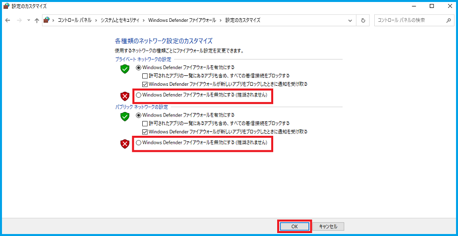
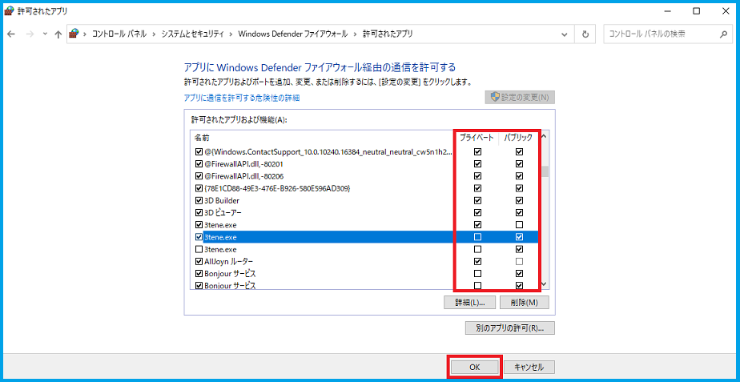
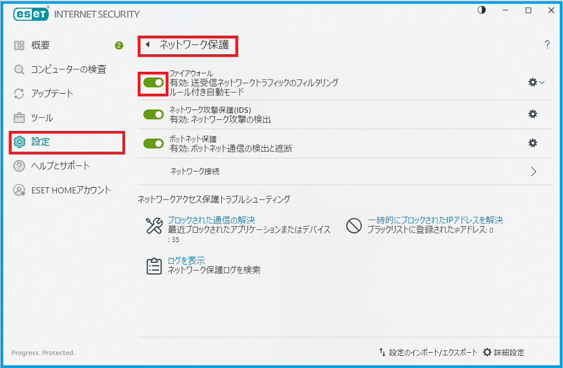
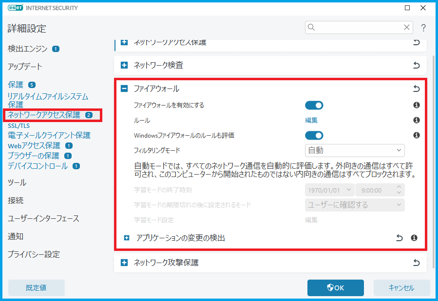
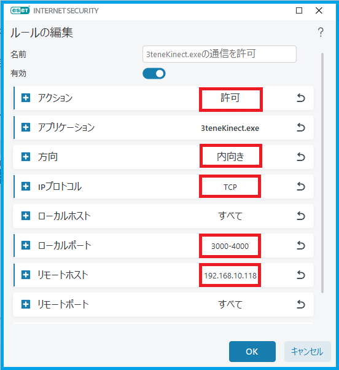
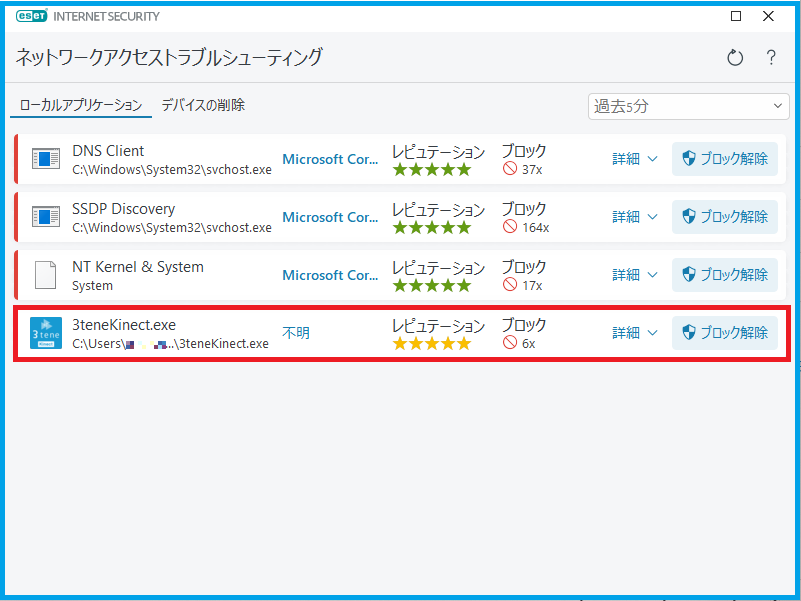

ファイアウォールの設定を行う前に
ファイアウォールは通信中（接続要求含む）に無効に設定しても即座に無効にはなりません。
PCおよびスマートフォン等が通信対象に対して完全に通信を行っていない状態で実行してください。
ファイアウォールを無効に切り替える方法
※この確認方法は初回のみにしてください。
- Windows の「スタート」をクリックし、アプリの一覧を表示します。
- 「Windows システムツール」フォルダを展開して、「コントロールパネル」をクリックし起動します。
- 「コントロールパネル」が表示されます。「表示方法」が「カテゴリ」の場合は「システムとセキュリティ」をクリックします。 (「表示方法」が「アイコン」の場合は「Windows Defender ファイアウォール」をクリックし5に移ります。)
- 「Windows Defender ファイアウォール」をクリックし、起動します。
- 「Windows Defender ファイアウォールの有効化または無効化」をクリックします。
- 使用しているネットワークの種類に応じて「Windows Defender ファイアウォールを無効にする」 をクリックし、「OK」ボタンをクリックしてください。
- 対象となるモーションアプリ等との接続確認を行います。
- ファイアウォールは完全に無効化されていますので、通信の確認後は再度有効化してください。

※5の時点で「Windows Defender ファイアウォールを介したアプリまたは機能を許可」をクリックすることで
下記で説明する「アプリにWindows Defender ファイアウォール経由の通信を許可する」が表示されます。
アプリケーション毎に通信を許可する方法
※推奨する設定方法になります。
- Windows の「設定」を開きます。
- 「更新とセキュリティ」>「Windows セキュリティ」>「Windows セキュリティを開く」 をクリックし、「Windows セキュリティ」を起動してください。
- 「ファイアウォールとネットワーク保護」>「ファイアウォールによるアプリケーションの許可」をクリックします。
- 「Windows Defender ファイアウォール」が起動し、 「アプリにWindows Defender ファイアウォール経由の通信を許可する」が表示されます。
- 「許可されたアプリおよび機能」欄から、ファイアウォール経由の通信を許可するアプリ(今回は 3tene.exe)にチェックを入れ、 許可しないアプリはチェックを外して「OK」をクリックします。
また、このときに使用しているネットワークの種類を確認しチェックをいれてください。
※「詳細」をクリックするとアプリの詳細情報が確認出来ます。

※ Windows Defender の画像は2022年9月時点でのものになります。
ファイアウォールを無効に切り替える方法
※この確認方法は初回のみにしてください。
- ESET の「設定」をクリックし、「ネットワーク保護」をクリックします。
- 「ファイアウォール」の項目でファイアウォールを無効にします。無効にする時間を選択して「適用」をクリックします。
- 対象となるモーションアプリ等との接続確認を行います。
- ファイアウォールは完全に無効化されていますので、通信の確認後は再度有効化してください。 ※ファイアウォールを無効にする時間は「10分」と短めにするのがおすすめです。

アプリケーション毎に通信を許可する方法
※推奨する設定方法になります。
- ESET の「設定」をクリックし、「ネットワーク保護」をクリックします。
- 「ファイアウォール」の項目の右端にある歯車のアイコンをクリックするか、画面右下の「詳細設定」をクリックしてください。
- 「ネットワークアクセス保護」>「ファイアウォール」をクリックし、「ルール」の項目の「編集」をクリックしてください。
- 「追加」をクリックし、項目内で「アクション」を許可に変更した上で、ファイアウォールでブロックされた通信の中で 許可したいアプリの情報(IPアドレス等)を設定し、「OK」をクリックしてください。
- 「ルール」内に設定した通信のルールが追加されるので、問題がなければ「OK」をクリックしてください。
- 「詳細設定」の画面に戻るので、設定が完了したら「OK」をクリックしてください。


※ファイアウォールでブロックされた通信を確認するには、「設定」>「ネットワーク保護」から「ブロックされた通信の解決」をクリックし、
「ネットワークアクセストラブルシューティング」を確認すると過去5分,15分,60分以内にブロックされた通信を見ることが出来ます。
また、ここで「ブロック解除」をクリックすることでも許可することが出来ます。それでもブロックされる場合は上記の方法を試してください。

※ ESET の画像は2023年10月時点でのものになります。